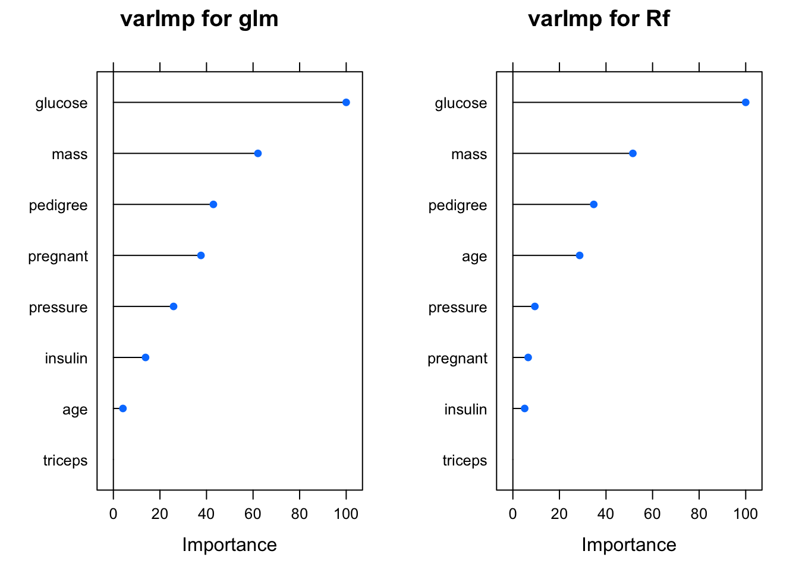
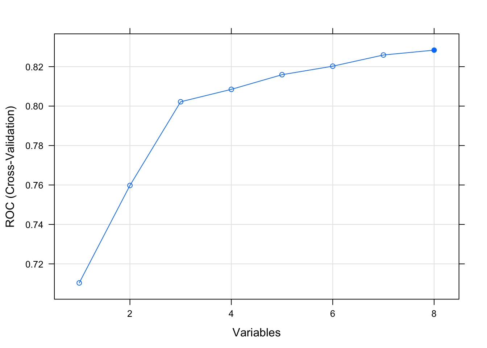

Chapter 7 Feature Importance
Another advantage of using the caret train function is that it provides a method to determine variable importance. This is useful when considering what features to include or not when building a model. If we summarize a given model, our myglm_caret model, we’ll see that some of our predictors are not significant.
We could use the varImp to use statistics generated by the specific modeling process itself. For more complex modeling techniques this winds up being very useful since digging into the model diagnostics can be daunting - although quite useful.
varImp(myglm_caret)## glm variable importance
##
## Overall
## glucose 100.00
## mass 61.38
## pregnant 41.70
## pedigree 36.00
## pressure 31.63
## age 17.81
## insulin 13.48
## triceps 0.00If you wanted to see how the different models rates the significance of predictor variables then you can easily plot them.
library(gridExtra)
p1 <- plot(varImp(myglm_caret),main="varImp for glm")
p2 <- plot(varImp(myrf_caret),main="varImp for Rf")
grid.arrange(p1,p2,ncol=2)
7.0.1 Feature Elimination
The caret package also supports “recursive feature elimination” which automates the selection of optimal features. This can be controversial since such a process could work at the expense of important statistical considerations. However, it remains a tool in the Machine Learning toolbox. Let’s work though an example of this using caret functions. First, we’ll remove highly correlated predictor variables from consideration.
correlationMatrix <- cor(pm[,1:8])
# summarize the correlation matrix
print(correlationMatrix)## pregnant glucose pressure triceps insulin
## pregnant 1.00000000 0.12945867 0.14128198 -0.08167177 -0.07353461
## glucose 0.12945867 1.00000000 0.15258959 0.05732789 0.33135711
## pressure 0.14128198 0.15258959 1.00000000 0.20737054 0.08893338
## triceps -0.08167177 0.05732789 0.20737054 1.00000000 0.43678257
## insulin -0.07353461 0.33135711 0.08893338 0.43678257 1.00000000
## mass 0.01768309 0.22107107 0.28180529 0.39257320 0.19785906
## pedigree -0.03352267 0.13733730 0.04126495 0.18392757 0.18507093
## age 0.54434123 0.26351432 0.23952795 -0.11397026 -0.04216295
## mass pedigree age
## pregnant 0.01768309 -0.03352267 0.54434123
## glucose 0.22107107 0.13733730 0.26351432
## pressure 0.28180529 0.04126495 0.23952795
## triceps 0.39257320 0.18392757 -0.11397026
## insulin 0.19785906 0.18507093 -0.04216295
## mass 1.00000000 0.14064695 0.03624187
## pedigree 0.14064695 1.00000000 0.03356131
## age 0.03624187 0.03356131 1.00000000# find attributes that are highly corrected
# (ideally >0.75)
highlyCorrelated <- findCorrelation(correlationMatrix,
cutoff=0.5)
# print indexes of highly correlated attributes
print(highlyCorrelated)## [1] 87.0.2 The rfe Function
Let’s apply the RFE method on the Pima Indians Diabetes data set. The algorithm is configured to explore all possible subsets of the attributes. All 8 attributes are selected in this example, although in the plot showing the accuracy of the different attribute subset sizes, we can see that just 4 attributes gives almost comparable results
rfFuncs$summary <- twoClassSummary
control <- rfeControl(functions=rfFuncs,
method="cv",
number=4)
# run the RFE algorithm
results <- rfe(pm[,1:8],
pm[,9],
sizes=c(1:8),
rfeControl=control,
metric="ROC")
# summarize the results
print(results)##
## Recursive feature selection
##
## Outer resampling method: Cross-Validated (4 fold)
##
## Resampling performance over subset size:
##
## Variables ROC Sens Spec ROCSD SensSD SpecSD Selected
## 1 0.7103 0.854 0.4328 0.03105 0.02477 0.08175
## 2 0.7598 0.820 0.5410 0.02825 0.04357 0.02239
## 3 0.8022 0.840 0.5634 0.02402 0.05102 0.05764
## 4 0.8085 0.832 0.6082 0.02167 0.04131 0.06934
## 5 0.8159 0.842 0.5858 0.02794 0.03290 0.08118
## 6 0.8202 0.846 0.5858 0.02464 0.02723 0.06017
## 7 0.8259 0.858 0.5896 0.02386 0.03993 0.08914
## 8 0.8284 0.858 0.5821 0.02484 0.02800 0.08872 *
##
## The top 5 variables (out of 8):
## glucose, mass, age, pregnant, pedigree# list the chosen features
predictors(results)## [1] "glucose" "mass" "age" "pregnant" "pedigree" "insulin"
## [7] "triceps" "pressure"# plot the results
plot(results, type=c("g", "o"))